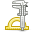

Linux
Packages built by the Open Build Service and digitally signed with GPG*1, for these distributions:
- Arch Linux
- Debian
- Fedora
- openSUSE
- Ubuntu

An unsolicited renaissance of KiSS
QKiSS is a modern implementation of KiSS viewer in Qt 6, compatible with KISS/GS and FKiSS 1 & 2 specifications.
Free software under GPLv3 · Linux · Windows
KiSS (Kisekae Set System) is a format of digital paper dolls. You dress the characters up by dragging their clothes with the mouse, and FKiSS scripts add interactions such as animations and sounds.
“Kisekae” comes from the Japanese word “着せ替え人形” (pronunciation: “kisekae ningyou”), meaning “dress-up dolls”.
KiSS originated from Japanese otaku subculture and personal computer enthusiasts community (particularly those using the NEC PC-9800 series) in the 1990s, and gained popularity throughout the 1990s and early 2000s.
By 2024, the existing KiSS viewers for Linux had stopped working: fkiss can still be built but no longer runs, and GnomeKiSS depends on outdated GNOME 2 libraries that most distributions no longer ship. Inspired by both, QKiSS was built from scratch.
Yes, I know there are some KiSS implementations which can run in a Web browser by using Web technologies directly, but they are (technically and architecturally) ugly when you want to turn them into a desktop application integrated with your OS and file system; I'm also tired of writing lots of disgusting HTML / CSS / JS as a workaround to make a web page pretend to be a native application, and then pack it into a bloated blob of an executable; and such a thing which actually can be done in a light-weight way should not need a browser at all, nor some Chimera like Electron. Similar reasons also apply to Java, which runs unbearably slow.
Besides, it was also a chance to practice writing a somewhat sizable project in C++. After all, it really is quite fun to write. (Although by the time I finished, this world of LLMs no longer seems to need a loser like me to write programs: the kind who grinds LeetCode for three months, then starts wishing to be reincarnated in another world.)
This project comes from nostalgia for the Windows 95/98 and GTK+ 2 era —— a lost age before Internet was polluted by AI-generated junk (this project does use some AI though). After all, life is frightening enough as it is; the real world is a hot mess, while nijigen and isekai remain a pure promised land.
Verily, verily, I say unto you: ye shall consider nijigen and isekai. Animen.

The romance of engineering and aesthetics*1 Weblin: a goblin who writes for the web, at the bottom of the food chain in the industry jungle. Commonly known as a web developer. For example, the author of QKiSS.
*2 The use of LLMs in each area of this project is disclosed in Q&A. For example, the HTML / CSS / JS of this website was left entirely to an LLM agent, because I have no interest in spending the weekend hours of my life writing web pages anymore; I am a dog kept by OpenAI and Anthropic. Woof woof.
Screenshots are not available in this build of the website.
Packages built by the Open Build Service and digitally signed with GPG*1, for these distributions:
A portable ZIP and an installer, built by GitHub Actions*2.
Want to build it yourself? See Development in the README.
All binaries are currently tested only on x86_64.
*1 The private key is generated inside the OBS server. The fingerprint of its public key is shown on this OBS page.
*2
The Windows files and the source tarball come with a GitHub artifact attestation: a signed statement that GitHub Actions built them from this repository. To check a downloaded file, run gh attestation verify FILE -R kuanyui/qkiss (GitHub CLI).
That is quite enough to load nearly all the Japanese KiSS sets I could find on the Internet.
But the shell() command is not implemented, on purpose, to avoid any security hole.
I have no Mac. So, no idea.
A KiSS viewer implemented in Qt 6. Having “KiSS” in the name is a convention of KiSS viewers, like fkiss, GnomeKiSS, KISSLD, and Direct KiSS.
I also considered a few other names:
The biggest archive right now is probably Otaku World, though you have to dig through it patiently. It has sets by both Japanese and Western artists.
Some people have also written their own implementations, such as one in JavaScript or one in Haskell, with online demos you can open right in your browser. But most of the sample sets they provide were dug up from Otaku World, too.
Note that these KiSS sets may contain NSFW content, and I can't make any guarantees.
LZH / LHA is a free compression format and tool, developed in 1988 by Haruyasu Yoshizaki, a Japanese physician. It was very popular in the Japanese personal computer scene of the time (by comparison, PKZIP, the ZIP tool that later became the mainstream, did not appear until 1989, and was shareware), so the KiSS developer community, which originated in Japan, naturally adopted LZH to compress KiSS sets.
But today, both the format and its implementations are old, and lha and unar extract LZH files of unknown origin, which makes them the easiest target for a malicious file. So on Linux, QKiSS locks them up:
qkiss-apparmor package, Debian / Ubuntu / openSUSE only): lha and unar are restricted once more, and QKiSS itself cannot read secrets such as ~/.ssh, nor write files used for persistent attacks, such as ~/.bashrc.Landlock and seccomp are built into QKiSS, with nothing to install, but they cover only these two external programs, not QKiSS itself.
As for Windows: as Eisen once said, anyone who uses Windows is a brave warrior, and needs none of these little tricks.
It doesn't fit the use case. SELinux's security model is inherently bad at “deny access to a few folders such as ~/.config/autostart, and allow access to everything else”, and I can't force users to put their KiSS LZH files only into some hardcoded ~/qkiss folder.
Besides, on the Linux desktop, people who deliberately run GUI apps outside unconfined_t must be rare. Such people either work at the Pentagon*1, or moved to Qubes OS long ago.
One more thing: I'm allergic to the taste of SELinux's command names. getenforce, chcon, load_policy, restorecon and a pile of other commands refuse to have an se prefix, and crap all over /sbin/. If writing this in my free time got me a work injury, there would be no insurance payout.
But even if you use SELinux, you still have the protection of Landlock and seccomp, which covers only the extraction by the two external programs, lha and unar.
*1 Generally speaking, playing any kind of KiSS viewer in the workplace is not recommended.
Discussing design patterns, finding suitable Qt APIs, and writing some examples for difficult Qt APIs (e.g. the delegates of MVC).
Rough scaffolds (e.g. argparse) and some snippets. Learning the latest “Pythonic” ways, and the best practices of type annotations in Python 3.
Translating the strings in *.ts from English or Japanese into the other languages, then fixing them by hand, line by line.
Collecting all the FKiSS commands from the FKiSS references in HTML, and organizing them into a formal list and docstrings in fkiss.cpp.
Surveying and discussing the best practices of CPack and CMakePresets.json for a cross-platform Qt app. Learning Windows packaging, NSIS and the deployment of DLLs.
For the Windows packages (I have no Windows development environment). No idea why Gemini does this better, while ChatGPT keeps spouting bullshit in this field. Before the public release, I realized that fighting this was a waste of time, so I let an LLM agent debug it and write the rest of the code.
Learning the many detailed rules of DEB and RPM packaging, troubleshooting, and how to build locally with osc. Discussing how to connect the CI/CD of GitHub Actions to the _service of OBS. Before the public release, I let an LLM agent debug it and write the rest of the code.
All the translations, and all the HTML / CSS / JS… I can't be bothered anymore to spend my free time writing web pages, the bottom of the programmers' food chain.
…Argh, I guess this might be my last project whose code is mainly written by hand… Not only KiSS itself: another era is over.
*1 Not only has freedesktop.org removed the Tango Desktop website, leaving only the tarballs, but now even the English Wikipedia has deleted this article; only Archive.org and Wikipedia in other languages (e.g. de, es, ja) still have it... I can't figure out why it was deleted. Even more absurd, the tango-icon-theme in the official Git repository of freedesktop.org itself is already incomplete, for unknown reasons. Maybe records were lost when it was migrated from SVN or CVS to Git? Anyway, I at least hope that the Tango Remixer project can keep Tango Desktop alive, even if only as a historical record...
*2 Oh Firefox, what on earth is wrong with you, insisting on removing a pile of icons from the UI? Did it never occur to you that people with dyslexia quite likely use a UI by relying on “position → icon color → icon details → and only then the text”? Making the icons monochrome wasn't enough, and now you've removed them altogether. Even Chrome and Edge, two rogues who don't care whether their users live or die, do a little better than you on this: at least they kept the icons in their application menu. On icons, DuckDuckGo Browser actually does the best job. As far as I know, DuckDuckGo is currently (as of October 2026) the only mainstream browser that still keeps icons in its right-click context menu, crushing Firefox, Chrome, Edge, Vivaldi and Brave, every single one of them. And the icons of its settings screen are even in color! Do you know how excited I was to see that!